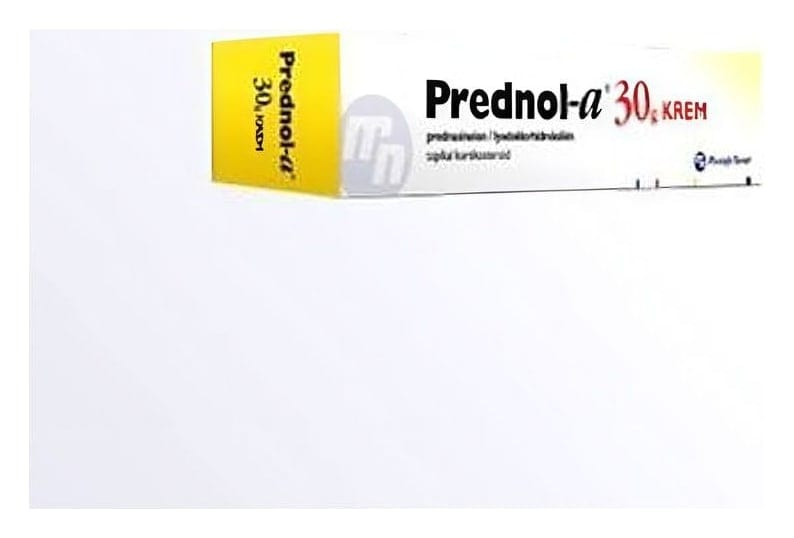

Prednol-A 30 g Krem

Ne için kullanılır
KT · Bölüm 1• PREDNOL-A krem formundadır. Prednasinolon ve iyodoklorhidroksikin etkin maddelerini içerir. Kortikosteroidler adı verilen bir ilaç sınıfına dahildir. Tüm kortikosteroidlerde olduğu gibi belirli dokulardaki hücrelerin protein sentezini kontrol altında tutar. İltihap önleyici, damar daraltıcı ve alerji önleyici etki gösterir. Ayrıca iyodoklorhidroksikin etkin maddesi bakteri ve mantarlara karşı etkilidir.
• PREDNOL-A, 30 g’lık alüminyum tüp içerisinde kullanıma sunulmaktadır.
• PREDNOL-A kortikosteroidlere cevap veren gelişmiş deri rahatsızlıklarında, özellikle bakteri veya mantarların sebep olduğu enfeksiyonun eklendiği durumlarda, dışarıdan cilde sürülerek kullanılır. Bunlar; deride şiddetli ve uzun süreli kızarıklık, genital bölgede kaşıntı, döküntü ile seyreden bazı dermatit türleridir. Ayrıca, yanıklar ve güneş yanıklarında sadece doktor tavsiyesi ile kullanılır.